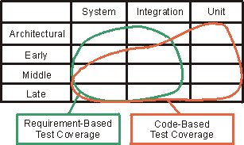
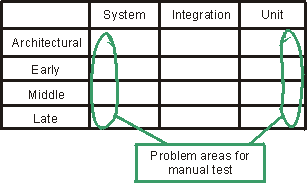

Concepts:
Test Strategy
A strategy for the testing portion of a project describes the general
approach and objectives of the test activities. It includes which stages of
testing (unit, integration and system) are to be addressed and which kinds of
testing (function, performance, load, stress, etc.) are to be performed.
The strategy defines:
- Testing techniques and tools to be employed.
- What test completion and success criteria are to be used. For example, the
criteria might allow the software to progress to acceptance testing when 95
percent of the test cases have been successfully executed. Another criterion
is code coverage. This criterion may, in a safety-critical system, be that
100% of the code should be covered by tests.
- Special considerations affect resource requirements or have schedule
implications such as:
- The testing of interfaces to external systems.
- Simulating physical damage or security threat.
Some organizations have corporate test strategies defined. In which case, you
work to apply those strategies to your specific project.
The most important dimensions you should plan your test activities around
are:
- What iteration you are you in, and what the goals of that iteration are.
- What stage of test (unit test, integration test, system test) you are
performing. You may work all stages of test in one iteration.
Now take a look at how the characteristics of your test activities can change
depending on where you are in the above-mentioned "test dimensions".
There are of course many characteristics you could look at, such as resources
needed and time spent, but at this point, focus on what is important to defining
your test strategy:
- Types of test (functional, stress, volume, performance, usability,
distribution, and so on).
- Evaluation criteria used (code-based test coverage, requirements-based
test coverage, number of defects, mean time between failure, and so on.)
- Testing techniques used (manual and automated)
There is no general pattern for how the types of tests are distributed over
the test cycles. Depending on the number of iterations, the size of the
iteration, and what kind of project this is, you will focus on different types
of tests.
You will find that the system test stage has a strong focus on making sure
you are covering all testable requirements expressed in terms of a set of test
cases. This means your completion criteria will focus on requirements-based test
coverage. In the integration and unit test stages, you will find code-based test
coverage is a more appropriate completion criterion. The following figure shows
how the use of these two types of test coverage measures can change as you
develop new iterations of your software.
- The test plan should define sets of completion criteria for unit test,
integration test and system test.
- You may have different sets of completion criteria defined for individual
iterations.

In your project you should consider automating your tests as much as
possible, specifically the kind of tests you repeat several times (regression
tests). But keep in mind that it costs time and resources to create and maintain
automated tests. There will always be some amount of manual testing in each
project. The following figure illustrates when and in what stages of testing you
will probably perform manual tests.

Example:
The following tables show when the different types of tests are identified,
and provide an example of the completion criteria to define. The first table
shows a "typical" MIS project:
| Iteration / test |
System test |
Integration test |
Unit test |
| Iteration 1 |
Automated performance testing for all
use cases.
� All planned tests have been executed.
� All severity 1 defects have been addressed.
All planned tests have been re-executed and no new severity 1 defects
identified. |
None |
Informal testing |
| Iteration 2 |
Automated performance and
functionality testing for all new use cases and the previous as regression
test.
� All planned tests have been executed.
� All severity 1 and 2 defects have been addressed.
� All planned tests have been re-executed and no new severity 1 or 2
defects identified. |
None |
Informal testing |
| Iteration 3 |
Automated functionality and negative
testing for all new use cases and all the previous as regression test.
95% of test cases have to pass.
� All planned tests have been executed.
� All severity 1, 2, and 3 defects identified. |
Automated testing, 70% code coverage. |
Informal testing |
| Iteration 4 |
Automated functionality and negative
testing for all use cases, manual testing for all parts that are not
automated and all the previous as regression test.
100% of test cases have to pass.
� All planned tests have been executed.
� All severity 1, 2, and 3 defects have been addressed.
� All planned tests have been re-executed and no new severity 1 or 2
defects identified. |
Automated testing, 80% code coverage. |
Informal testing |
The second table shows types of test and completion criteria applied for a
"typical" safety-critical system:
| Iteration / test |
System test |
Integration test |
Unit test |
| Iteration 1 |
Automated performance testing for all
use cases, 100% test-case coverage.
� All planned tests have been executed.
� All severity 1 defects have been addressed.
� All planned tests have bee re-executed and no new defects identified. |
None |
None |
| Iteration 2 |
Automated performance, functionality
and negative testing for all use cases, 100% test-case coverage.
� All planned tests have been executed.
� All severity 1 or 2 defects have been addressed.
� All planned tests have been re-executed and no new defects identified. |
Automated performance testing |
Informal testing |
| Iteration 3 |
Automated performance, functionality,
negative usability and documentation testing for all use cases, 100%
test-case coverage.
� All planned tests have been executed.
� All severity 1, 2, and 3 defects have been addressed.
� All planned tests have been re-executed and no new defects identified. |
Automated performance testing and the
previous as regression test |
Automated testing, 70% code coverage |
| Iteration 4 |
Automated performance, functionality,
negative usability and documentation testing for all use cases, 100%
test-case coverage.
� All planned tests have been executed.
� All severity 1, 2, and 3 defects have been addressed.
� All planned tests have been re-executed and no defects identified. |
Automated performance testing and the
previous as regression testing |
Automated testing, 80% code coverage |
Copyright
� 1987 - 2001 Rational Software Corporation
| |

|
 Disciplines >
Disciplines >
 Test >
Test >
 Concepts >
Concepts >